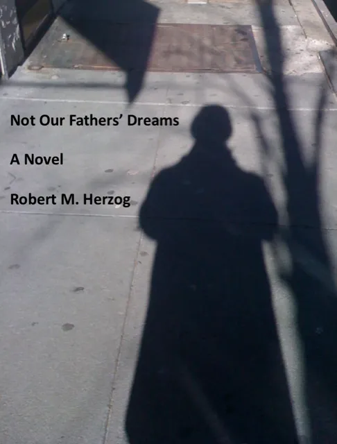

Fiction
Not Our Fathers’ Dreams: Chapter One
Each generation is given just so many choices; the rest it must create.
From the novel Not Our Fathers’ Dreams

“The weight of this sad time we must obey,
speak what we feel, not what we ought to say.”— Edgar, King Lear
It wasn’t like that. I don’t care what you heard.
Part One: Spaceship Dreams
Chapter One
Each generation is given just so many choices; the rest it must create. Alexander Barish Fongold’s future had once been laid clearly before him, a few spokes emanating from the hub of his time and place. The wheel began turning in Brooklyn, a family of lawyers, Jewish by culture, it rolled through the usual blitz of boyhood battles into a cloistered New England campus; all these were normally passageways, not potholes. A few spokes for his generation spinning in post-war tranquility and growth. Until the earth shifted, the wheel spun wildly, couldn’t find traction, it turned too fast, the spokes collapsed under the pressure of new angles and unexpected torque, the brakes burned out in the plummet into the unknown. The lines splayed like a Pollack painting, vivid but poorly understood.
Now he was on a spoke where guards in stiff blue uniforms directed him to take “just this path, no stepping off.” He and Jimmy walked past rows of identical two-story brick buildings; the early sun reflected off their windows like unblinking eyes, tearless, remorseless. Over the walls Fong could see the white clock tower of his high school. The time on each face was slightly different, so that if you were late by the east you could still hope for a reprieve from the north. Sooner or later you ran out of faces.
Distant men marched in the same direction, with the same pace and stride; Fong shivered. The sounds of the ships in the harbor were muffled, distant and inviting, like freedom pounding on iron. They were directed by more silent serious uniforms into a large plaster building, through huge double doors into a broad round marble-floored room, its ceiling as high as the building, maybe forty feet. They approached a central kiosk plunked down in the middle of the room, covered in official notices, dark and empty behind grilled windows facing in six directions, none of them inhabited. The echoes of their steps were like betrayals of secrets, forcing them to whisper. First point to the uniforms.
A large red-haired guy with a beard that encircled his head whimpered in the middle of the room, its sole inhabitant. He wore denim overalls over a plaid shirt, an oddly country look for Brooklyn. He leaned against the kiosk, whispering to its empty inside, or maybe just to the booth itself. A couple of guys in uniform appeared, and whisked him out a door to the left. Acid, Fong thought. He’d considered it.
Without a word, more uniforms pointed to a door on the right. Wind up the wooden soldiers, Ollie; save my Toyland, babe. A childhood favorite. Fong and Jimmy tended to drift in the face of stern directives, but the voiceless uniforms regimented them in line. They and another hundred guys were funneled into a big room with endless rows of desks bolted to the floor, just like third grade, except that now Fong’s knees pushed against the desk bottom. He had to splay his legs to fit.
A buzzcut corporal appeared at the front of the room, tight-lipped, glaring, hands on hips.
“Gennelmun,” Buzz cried, barely moving his lips, “this is the Army intelligence test.” What intelligence had to do with the Army was beyond Fong. Then Buzz explained it. “And I tell you, do not try to fuck up this test because gennelmun, you cannot fail this test and should you fuck up on this test then you will end up on the front line in Vietnam where gennelmun, you do not last long on the front line in Vietnam so gennelmun, do not fuck up on this test.”
This breathtaking syllogism was not the pre-test encouragement Fong was used to. The little corporal distributed the tests.
Fong was hot-wired to perform, so he took it like he took all intelligence tests, like the SATs, trying his best. They could threaten his body; he would never concede his head. This is the way the world ends. He actually got pissed off when he had trouble with the spatial relationships questions, and the section on what these tools were used for, more farm boy data than the kind of stuff they learned in Brooklyn, unless it was the bent coat hanger helpful for car access. When your neighbor lost his keys.
Halfway through the allotted hour, the little corporal reprised his mantra: “I tell you gennelmun do not try to screw up on this test because it will not get you out of the Army, the Army doesn’t care how smart you are, just what it will do with you and believe me gennelmun, you do not want to get a low score on this test.”
Fuck. Fong believed him. He tried concentrating, forcing aside quick flicking images of guys in high grass streaked mud screaming over the dull pops of gunfire staccato counterpoint to the crescendo of helicopter blades lifting them off leaving parts behind screaming. If he figured out how the fucking dotted lines on this cutout shape came together, maybe he’d be one problem solved further away from there.
PEACE NOW, MOTHERFUCKER, he wanted to shout, rise up, lead the walkout, start the end of it, start it here, start it now, no more universal soldiers, he wanted to scream it at the two-striped bastard, he hated him, his tight-lipped crap, what right did he have to lay this bullshit on them? Locked up in Buzz’s clenched jaw was all his manhood, not to be extracted by these faggot peacenik pinko hippie shitheads he had to face in here instead of being out there, pulling his trigger. Though he’d had to kiss all kinds of ass to get this clerical assignment. The prick would shit in his pants if he had to actually duck for cover somewhere. Fong wanted to ask him big and out loud who the fuck he thought he was when he was so clearly no one.
But fuck. Fong believed him.
As usual, Fong finished first. He wasn’t about to notify the proctor, or check out his fellow test takers, or lift his line of sight above his knees. So he tried to raise the scarred top of the desk, imagining leftover rumpled grade school love notes like the kind he used to pass to Brenda Jabari. Brenda would raise her hand and ask the teacher if she could share something with the other girls, holding his note. Then as now, Fong sunk lower behind the desk. What happened to most guys didn’t seem to happen to him, but in this place, maybe that wasn’t all bad. The desk was nailed shut.
“Gennelmun, this exam is now concluded, finished and terminated, you will pass papers forward over the right shoulder of the man in front of you, you will then rise in a standing position and line upright vertically against the wall to await your dismissal, upon which dis-mal you will proceed as directed directly towards the entrance doorway providing access to the locker rooms.” But Buzz didn’t specify which wall, so for all his Army manual braying a welcome chaos struck the room. Buzz started yelling for everybody to get back in place, but he’d lost it, indeed he never really had it. Fong looked over at Jimmy at the far wall, they giggled, then cleared out of the room to the strains that they were not gennelmun.
The hall led only to a big locker room, they were meat in the corral, it had all been done before. Keep them doggies movin’, though they’re disapprovin’. The locker room stank worse than the football room after Friday’s practice, five-day unwashed jock strap odor was perfume to the cloying stench of fear that seeped beneath skin and corroded bones. Fong gasped for breath, drowning.
He heard some shouts from a distant row of lockers. He saw a bunch of guys Jimmy and he had gone to school with. They looked like they were enjoying themselves, joking around, snapping their pants at each other, yelling “Semper fi,” mimicking holding a rifle in their hands and shooting, “ack ack ack,” ready for action. They were kids he’d never hung out with, kids from 6-5 and 9-10, who took shop several times a day and couldn’t get anywhere near shouting distance of reading or math at grade level, unlike Fong’s cohorts who were already at level twelve in sixth grade, and off the charts thereafter. The gulf had played out in snippets, like intra-school sports contests when the kids from 9-8, humiliated on the basketball court, lay in wait to ambush Fong’s 9 Special Progress 1 on their way home from school, wanting to beat the crap out of them off the courts, away from the direct competition, on a field they could dominate. They were the kids who told nigger jokes and asserted how the Jews had killed Jesus and were going to get theirs, they were the kids with packs of cigarettes wound into the sleeves of their t-shirts, at lunch time they’d come up in a bunch and ask for a nickel for the cancer fund, which was to buy them smokes, they were the kids who spent hours at bowling alleys, they were the kids headed for different futures.
It had all been kid stuff, but now they were the kids willing to pull the trigger to take down gooks and slant-eyes, they were the kids who shouted “Love It or Leave It” at demonstrators who had the audacity to question their projection of the nation, they were the kids wanting to beat the crap out of smart ass or different looking kids on or off the court. Some of them were also the kids who left the neighborhood and didn’t come back, or returned absent some piece of themselves, and rounded corners angry and confused with one less leg or arm or eye than they’d started with, or a bit of their brain that needed dope to stay alive and get through the nights so they could spend days spewing all they had left, their venom.
A voice screamed from the doorway: strip down to socks, shoes and shorts. Army poetry. He forced himself to take his clothes off slowly, calmly, roll them into a plastic bag. Jimmy sailed through, still grinning. It was impossible not to look like a putz in this outfit, or not to feel like one, pale legs sticking out from mostly off-white briefs. Fong got some looks for his Brooks Brothers boxers, but he looked back like, hey, he needed the space for the equipment. Nobody made eye contact, the rows encouraged furtive isolation. In the far corner a guy puked. Nobody wanted to know him. But the smell carried and guys started upchucking down the line. Fong cleared out before it reached him. Gag reflex. A form of comedy. Jimmy was still smiling, with a touch of vindication, Fong hearing his words as they had walked over: “You’ll see, it’s all bullshit. They’ve got it set up and that’s that. You don’t talk to these people, they don’t talk to you. They barely look at you.” Fong wanted to believe something else, he just didn’t know what.
They were broken up into groups. Jimmy was prodded left, Fong right. He was glad to escape the wave of vomit, start breathing again. That lasted until a white-coated guy grabbed his balls and said cough. The Army’s loving touch. An assembly line check-up: squeeze, thump the chest, on to the next. A cow could have passed. His group marched out as Jimmy’s line marched in. Onward Christian soldiers. Leave us Jews behind. As he and Jimmy passed each other it was all they could do to keep from bursting out laughing.
He was led into a glass bubble raised on a platform, told to put on the earphones and press a button when he heard a sound. Men in brown uniforms and white smocks observed him, slightly distorted through the glass, devolved into a different species, men able and willing to evaluate his mass for their fodder, a connection he could not conjure, ready to dispatch him for the wishes of their masters. Their philosophy and action were alien to him, to the world erupting around him, at least the part of it he wanted to see and feel and touch, not separated like this in a display cage pushing a button when he heard a noise, already a trained rat, only those distant men, that noise, that view, that button. Standing in the cockpit, looking through its glass windows at them watching him he felt beyond alone in this world, seeking solace in the silence between the hums, flying to nowhere, not wanting to get off.
They went through five cycles, then it was out and to the end of a line in the next hall. In front of him guys disappeared like they were being picked off. He didn’t want to go forward, it was no direction home, but bodies bunched behind him, pushing him along.
When he was first man, a uniform handed him a cup, said, “Fill this halfway with piss, bring it out, make it fast,” and spun him into a big bathroom, sixty urinals parked on two facing walls, disinfectant and urine barking at his nostrils, reprising the puke-smell of his recent past. He pinched in a half-breath of acrid air, took an empty slot.
There were guys so nervous they couldn’t get a drop out, groaning, squeezing, hopping, they could have been standing there an hour, a day, the cup must have looked like a bathtub, their buttocks clenched, shaking for a few drops of mercy, pulling, no pleasure in it, while the guards outside kept yelling to hurry the fuck up, big mean knowing grins on their faces. Put a uniform on a guy and how quickly neighbors became a them to their us; getting even for their own days, passing it down the line. There would always be other kids, forever angry at being in class 9-10. Fong lifted his cup, stared at it. He let loose, with plenty left over for the pot, and cleared out. Score one for him.
Cup in hand, he was moved to a narrow light green hallway to wait for the final stop. The Doctor’s Review. A long line of guys looking real tiptop in their underwear, shoes and sock carrying plastic cups full of their own piss inched down the hallway, pale green under the hum of fluorescent lights. He leaned against the wall. Down the hall one of the lights flickered on and off, broken as long as time, faces alternated between flesh tones and gray green, no strobe light’s dream, no warm night. He knew they could have fixed it, and he knew they didn’t. It was no less irritating for being obvious.
He was down to one hope left on this obstacle course. It wasn’t supposed to have been like this.
Read another passage from the novel: That Terrible Night in June, 1968. The short film Flights is adapted from it.